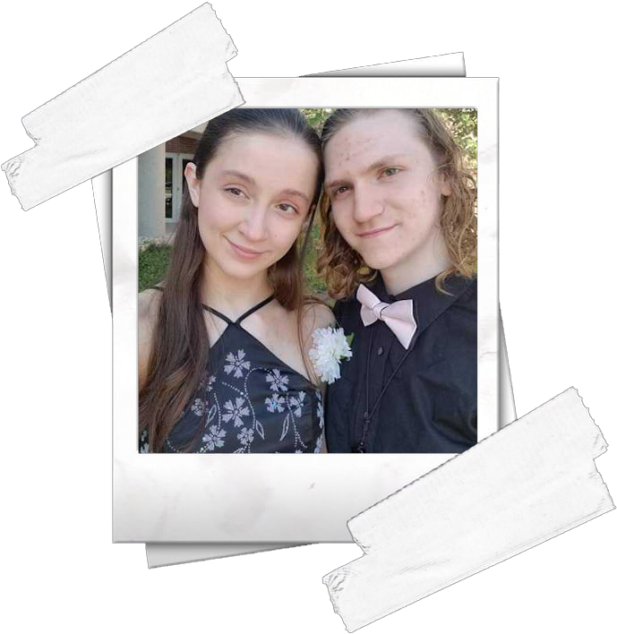
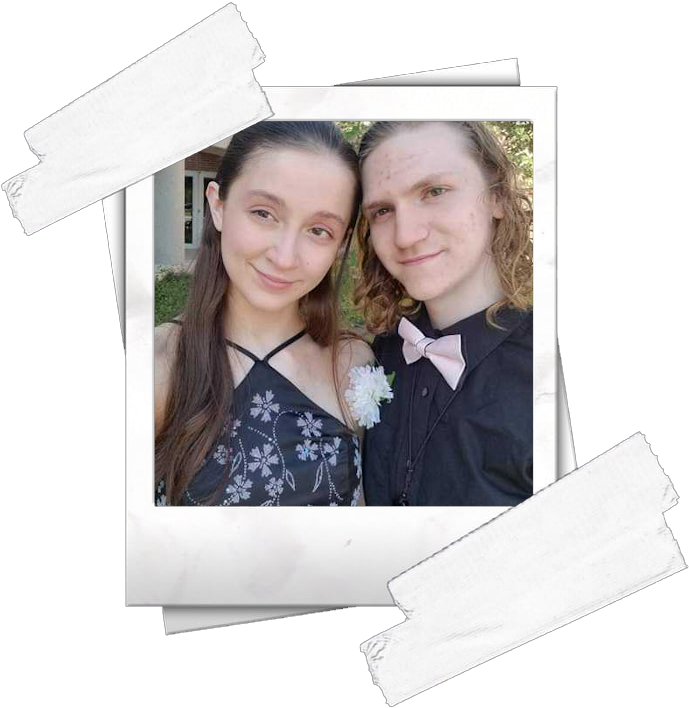

At a Glance
Sarah Sexton is a software engineer and programmer based in Indianapolis, Indiana. Currently, she is studying code at Warren Central High School and plans to go to college at Wayne State University in order to study Computer Science further. As of 2019, she has been dedicatedly programming for approximately two years. In the Summer of 2019, Sarah also spent some time working with the NexTech Catapult program, a professional Summer internship used to immerse High School students into the world of Computer Science.
Originally coming from Rapid City, South Dakota, Sarah enjoys a variety of activities. Playing violin, singing, acting, along with many other performing arts, Sarah also dedicates herself to studying as hard as possible in whatever subject she may currently be tied to. She has two cats and three dogs, one cat being named Willow who is pictured on the left. Enjoying life with her current partner Evan, Sarah enjoys taking life one step and day at a time and making the most of any and all opportunities she gets to have. Otters are also extremely important to Sarah, as one of her main goals in life is to one day have one as a pet and name him Rico.
Speaking of, there are some otters hidden on the page somewhere. Can you find them?